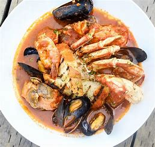

Cioppino

Ingredients
Switch to Steps
-
2 Garlic Cloves
-
1 Parsley Bunch, chopped
-
2 cans Stewed Tomatoes (14.5 oz ea.)
-
2 Bay Leaves
-
1 tsp Dried Basil
-
1/2 tsp Dried Thyme
-
1/2 tsp Dried Oregano
-
1 cup water
-
1 1/2 cups White Wine
-
1 1/2 lbs Shrimp
-
1 1/2 lbw Bay Scallops
-
18 Clams
-
18 Mussels, cleaned and debearded
-
1 1/2 cups Crab Meat
-
1 1/2 lbs Cod Fillet
-
3/4 cup Butter
-
2 Onions
Steps
Switch to Ingredients
-
Over medium-low heat melt butter in a large stockpot,
add onions, garlic and parsley.
-
Cook slowly, stirring occasionally until onions are soft.
-
Add tomatoes to the pot, breaking them into chunks.
-
Add chicken broth, bay leaves, basil, thyme, oregano, water and wine.
Mix well.
-
Cover and simmer 30 minutes.
-
Stir in the shrimp, scallops, clams, mussels, fish and crabmeat.
Bring to boil.
-
Lower heat and simmer 5 to 7 minutes until clams open.
-
Ladle soup into bowls and serve with warm, crusty bread.